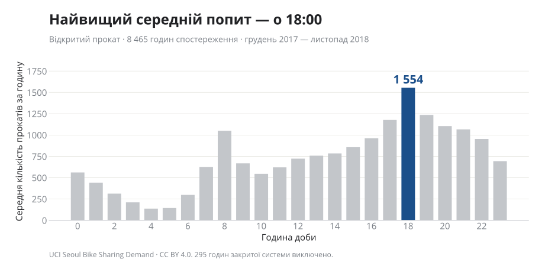

<!doctype html><html lang="uk"><meta charset="utf-8"><meta name="viewport" content="width=device-width, initial-scale=1">
<title>Data Story · Seoul</title><style>
@font-face{font-family:OpenSans;src:url(OpenSans.ttf)}*{box-sizing:border-box}body{margin:0;font-family:OpenSans,sans-serif;color:#202124;background:white}main{max-width:1250px;margin:auto;padding:26px}header{border-bottom:2px solid #1B4F8A;display:flex;justify-content:space-between;align-items:center;padding-bottom:16px;color:#1B4F8A}h1{font-size:24px;margin:0}nav{display:flex;gap:12px;flex-wrap:wrap;margin:22px 0}button{font:inherit;cursor:pointer;background:white;color:#1B4F8A;border:1px solid #1B4F8A;padding:9px 18px}button[aria-pressed=true]{background:#1B4F8A;color:white}figure{margin:0}img{width:100%;max-height:640px;object-fit:contain}figcaption{font-size:16px;line-height:1.6;margin:20px 0}footer{font-size:13px;color:#7A7F86;border-top:1px solid #ddd;padding-top:16px}a{color:#1B4F8A}
</style><main><header><h1>Data Story · прокат велосипедів у Сеулі</h1><span>Перевірена демонстрація</span></header><nav aria-label="Графік">
<button data-view="hourly" aria-pressed="true">За годинами</button><button data-view="seasonal" aria-pressed="false">За сезонами</button><button data-view="distribution" aria-pressed="false">Розподіл</button><button data-view="temperature" aria-pressed="false">Температура</button><button data-view="model" aria-pressed="false">Модель</button></nav>
<figure><figcaption id="caption">Середній попит о 18:00 — 1 554 прокати за годину; 353 спостереження. Розглядаємо лише години відкритої системи.</figcaption></figure>
<footer>8 760 початкових рядків · 8 465 годин відкритої системи · 295 годин закриття виключено.<br>Джерело: <a href="https://doi.org/10.24432/C5F62R">UCI Seoul Bike Sharing Demand</a> · CC BY 4.0 · 2017-12-01 — 2018-11-30. <a href="facts.json">Точні числа й походження</a>.</footer></main>
<script>const captions={hourly:'Середній попит о 18:00 — 1 554 прокати за годину; 353 спостереження. Розглядаємо лише години відкритої системи.',seasonal:'Середні за сезонами: літо 1 034, осінь 924, весна 746, зима 226. Це описові зв’язки, які не доводять причинного впливу сезону.',distribution:'Розподіл кількості прокатів за годину відкритої системи. Показано всі 8 465 спостережень.',temperature:'Кожна точка — година роботи прокату. Зв’язок із температурою може залежати також від години, сезону й інших умов.',model:'Лінійна регресія: тестовий R² = 0,635; MAE = 289 проти 516 у прогнозу середнім; RMSE = 383. Випадковий поділ 70/30 демонструє зв’язки в цих даних, а не прогноз майбутнього.'};document.querySelectorAll('button').forEach(button=>button.onclick=()=>{document.querySelectorAll('button').forEach(b=>b.setAttribute('aria-pressed',String(b===button)));chart.src=button.dataset.view+'.svg';chart.alt=button.textContent;caption.textContent=captions[button.dataset.view]});</script></html>